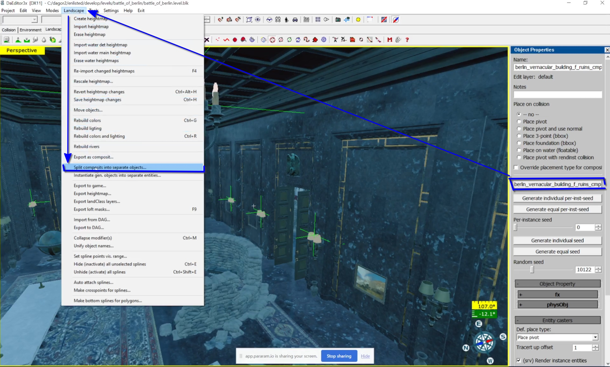
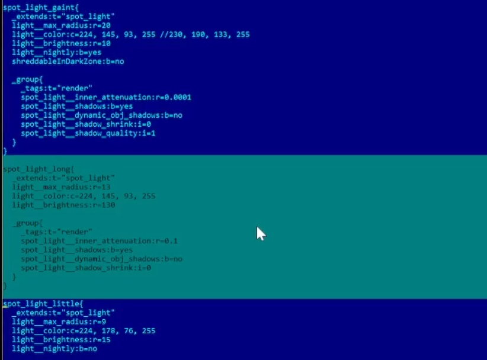

Replacing or Modifying Lights in Props
This article covers how to replace or modify light sources in props, using the Enlisted project as an example. However, the general process is applicable to any daNetGame-based project.
Phase 1: Setting Up the daEditor
Open daEditor: Navigate to your directory:
<your_drive>:/<engine_root>/enlisted/developand rundaEditor.cmd.Open the Project: Select Open Project from the menu.
Load the Map: Open the battle_of_berlin map.
Hide Unnecessary Visual Elements: Press
Pto open the Properties window. In the Navigation meshes section, uncheck the unnecessary options as shown below.Disable Splines: Red dots represent splines. To hide them, click the black cross on the toolbar.
Hide Additional Elements: If anything else needs to be hidden, press
F11and uncheck the relevant boxes in the pop-up window.Navigate to the Prop: Fly to the prop of interest using freeCamera mode, toggled with the
Spacebar. Move withWASDandLMB.Select the Target Composite: When you reach the light fixtures, select the composite (in this case, a building like the reichchancellery) and press
Pto open Object Properties.Identify the Selected Asset: Pay attention to the highlighted button that shows the asset name (
reichchancellery_cmp), which is more reliable than theNamefield, as these may differ.Break the Composite into Components: In the Landscape menu, select Split components into separate objects to break the composite down. Repeat this until you can access the light fixtures.

Select the Light Fixture: Enable object selection mode (red face icon) and select the light fixture. The name of the fixture will appear on the mentioned button.
Phase 2: Asset Viewer and Light Preset Identification
Open the Asset Viewer: Run
daViewer.cmdfrom the same directory as before. Copy the asset name and use it to search the asset library.Select the Composite: The asset consists of three parts:
Geometry
Composite (geometry + collision)
Collision
Select the composite, right-click it, and choose Reveal in Explorer.
Locate the
.blkFile: In the file directory, right-click the.blkfile and open it with a text editor or a tool like FAR Commander.Find the Light Preset: In the
.blkfile, find the light preset referenced by the light fixture. Copy its name.Search for the Preset: Use FAR Commander (or a preferred method) to search for the preset in the project directory
<engine_root>/enlisted/prog. UseAlt+F1to select the correct drive andAlt+F7to start the search. The first line specifies the file mask, while the second line is for the name of what you’re searching for. Enter the name into the second line and pressEnter.Open the Preset File: The preset will be found in the
lights.blkfile. PressF4to open it and view all the light templates.Search for the Preset Name: Use
F7to search for the specific light preset (e.g.,light_chandelier_big) and navigate to the preset.
Phase 3: Modifying and Creating Light Templates
Find the Parent Template: The
extendsparameter in the preset refers to another preset (e.g.,omni_light). Locate the parent preset.
Trace the Parent Presets: If necessary, trace the hierarchy of templates to the top-level light preset (e.g.,
local_omni_light).Create a New Light Template: Based on the parent template, create a new one. This will require a new
.gameObjfile with a unique name, which the new light template will reference.Copy and Rename the Old Game Object: In the directory where the old
.gameObjfile is located, copy it and rename it as needed. Open the corresponding.blkfile and adjust the references.Verify the Asset: Search for the renamed asset in the Asset Viewer, right-click it, and find its location in the file structure.
Rename the Game Object: It’s recommended to follow the naming conventions.
Phase 4: Testing and Exporting
Open a Test Map in daEditor: Open the test map by selecting Open Project during the daEditor load process.

After the compilation is complete, daEditor will prompt you to open a map. To proceed, navigate to
levels/dev/asset_test_leveland open the.blkfile for the test level.Clean Up the Scene: Hide unnecessary elements as described earlier, and delete any unwanted objects by pressing
Ctrl+AandDelete.Create and Place the New Entity: Click the white face icon on the toolbar to create an entity. Search for the new
gameObjin the search field and drag it into the scene.Adjust the Pivot: By default, the entity’s pivot will be set to the world origin (
0, 0, 0), as the Place on collision toggler is set to Place pivot . Open the Properties window (P) and set it to -no-.Place the Chandelier Asset: Copy the chandelier’s asset name, search for it in daEditor, drag it into the scene, and align its collision settings by entering the same numbers into the coordinate lines.
Note
The orientation of the game object along its axes is currently unclear and can only be determined through experimentation.
Add Entities for Light Bulbs: Add two entities for future light bulbs and duplicate them by dragging while holding
Shift.Update Composite in daEditor: You can change the composites tied to entities via the Property window. Select the asset, click on the asset name, and choose the appropriate entity (e.g.,
light_***_big).Export the Composite: Now, you need to assemble a new composite object. The first object you select will serve as the root node, from which the composite’s pivot will inherit. Start by selecting the chandelier (its geometry), then hold
Ctrland drag to select the remaining elements. Next, click on Landscape and choose Export as composite.Save the Composite: Find the correct directory in the asset library, append
_cmpto the name, and save it.
Verify the Composite in Asset Viewer: Search for the composite in the Asset Viewer and ensure everything looks correct.
Final Steps: Export and Testing
Load the Location in daEditor: Open daEditor, load the battle_of_berlin level, and uncheck all in Navigation meshes for faster export.
Export to Game: Select Project > Export to game (PC format), leave the settings unchanged, and confirm.
The scene will be exported, and the changes will be written into the binary file.
Important
If you are adding a new prop rather than modifying an existing one, a rebuild is required.
While the build is exporting, you can update the light preset to the one you need. To do this, go to the
progdirectory and find thelight.blkfile.Replace the Light Preset: In the
light.blkfile, find the appropriate spotlight preset for replacement and copy it.
Next, replace the active template with the copied preset.
After modifying the template parameters, save the changes and close the file:
F2– save changes,F4– exit.Launch the Game: Navigate to the
<engine_root>/enlisted/gamedirectory and launch the game via thez_enlisted_launcher_prog.In the Scene section, select the berlin map, choose
sourcein Vroms, and press the Play button.(Alternatively, you can enter the command
app/timeSpeed 0in the console to freeze time in the game).Adjust Lighting Orientation: Once in the game, switch to free camera mode or press
F12and navigate to the asset you are working on. As we can see, there are now two entity objects, confirming that the changes have been applied. However, we also notice that the light fixtures are oriented incorrectly.To fix this, return to the daEditor with the test map. Adjust the orientation of the light entities, reassemble, and export the composite. Afterward, re-export the map, reopen the game, and test the changes again.
Once the lights are correctly oriented, proceed with the final lighting configuration as described in the Lights article.